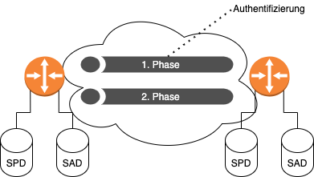

Virtual Private Network (VPN)
Vergleich der möglichen Datenleitungen
- Zuvor und auch sehr selten heute noch:
Leased Lines1- Teuer
- Für Mobilarbeiter nicht möglich, da die Leitung ja fest verlegt ist
- Skaliert nicht
- Normaler Anschluss
- Günstig
- Jedoch kann jeder auf dem Weg des Pakets mitlesen (
Vertraulichkeitnicht vorhanden) - Um
Vertraulichkeitwieder herzustellen kann ein VPN eingesetzt werden
Allgemeines
- Findet in den meisten Fällen auf
Layer-3statt (MPLS,GRE,IPsec)
Typen von VPN
Site-to-Site
- Dient zur Verbindung zwischen zwei Netzwerken
End-to-Site (Remote-Access)
- Dient zur Anbindung von z.B. mobilen Arbeitern
- Der Client wird Teil des anderen Netzes
IPsec
- Sichert
Vertraulichkeit,IntegritätundAuthentizitätab - Sammlung von Algorithmen und Funktionen
| Ziel | Realisierung |
|---|---|
Vertraulichkeit |
Verschlüsselung |
Integrität |
Hash-Funktionen |
Authentizität |
Identitätsüberprüfung |
Schlüsselaustausch |
Diffie-Hellman |
| Realisierung | Konkrete Methode |
|---|---|
| Verschlüsselung | DES, 3DES, AES |
| Prüfsummen | MD5, SHA |
| Authentifizierung | RSA, Pre-Shared-Key |
| Schlüsselaustausch | DH1, DH2, DH5, … |
- Man spricht von einer
Security Association(SA), wenn die Parameter für eine VPN-Verbindung ausgehandelt werden.
Security Policy Database (SPD)
- Grundlage für die Entscheidung, wie mit einem Paket verfahren werden soll
- BYPASS, DISCARD, PROTECT
Security Association Database (SAD)
- Enhält für jede aufgebaute
IPsec-Verbindung einen EintragSA - Bestandteile eines Eintrags (unvollständig):
- Security Parameter Index: Welches Set an Parametern wird genutzt?
- Sequenznummer: Sequenznummer des letzten Pakets -> Schützt vor Angriffen von außen
- Modus: Tunnel- oder Transportmodus?
- Tunnel: Mehr Informationen werden verschleiert. IP Paket wird in noch ein Paket eingepackt
- Transportmodus: Nur der Nutzdatenanteil wird verschlüsselt. Wer kommuniziert ist also für alle einsehbar
Internet Key Exchange (IKE)

- Aushandlung von Sicherheitsparametern für
IPsec - UDP Port 500
- Zwei Phasen
SAfür Steuerung: Verschlüsselte Verbindung wird aufgebaut, ist aber nur für die Steuerung gedacht- 2x
SAfür Daten: Jeweils eine verschlüsselte Verbindung von einem Gateway zum Anderen
- Phasen werden immer wieder erneut aufgebaut, um Brute-Force fast unmöglich zu machen
IPsec-Protokolle
Authentication Header (AH)
- Port 51
- Sichert
AuthentizitätundIntegritätab - Datenverkehr wird also nicht verschlüsselt
Encapsulation Security Protocol (ESP)
- Port 50
- Sichert
Vertraulichkeit,AuthentizitätundIntegritätab
-
Leased Lines sind sind nur für ein Unternehmen reserviert und verbinden zwei Orte miteinander. ↩